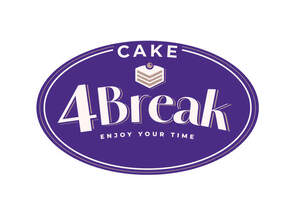

Trade Mark Journal No.2025/043 24 October 2025
UK00004278916 16 October 2025 (30)

- Class 30
- Chocolate confectionery products; Confectionery chocolate products; Non-medicated confectionery products; Confectionery products (Non-medicated -); Cocoa-based ingredients for confectionery products; Chocolate fillings for bakery products; Snack food products consisting of cereal products; Dairy confectionery; Confectionery items (Non-medicated -); Chocolate based products; Chocolate decorations for confectionery items; Confectionery items formed from chocolate; Starch products for food; Confectionery (Non-medicated -); Mixes for making bakery products; Flour confectionery; Bakery goods; Preparations for making bakery products; Fresh pies; Cakes; Iced cakes; Cream cakes; Chocolate cakes; Baking spices; Flour mixtures for use in baking; Flour for baking; Baking powders; Pre-mixes ready for baking; Baking powder; Ready-made baking mixtures; Prepared baking mixes; Baking soda; Baking soda [bicarbonate of soda for baking purposes]; Flavorings for cakes; Cake doughs; Dough for cakes; Flavourings for cakes; Aromatic preparations for cakes; Prepared pie crust mixes; Cake dough; Natural sweetening substances; Vanillin; Vanillin [vanilla substitute]; Chocolate; Chocolate confectionery; Chocolate desserts; Chocolate biscuits; Confectionery items coated with chocolate; Chocolate pastries; Chocolate caramel wafers; Chocolate brownies; Chocolate wafers; Chocolate cake; Chocolate fudge; Chocolate waffles; Chocolate bars; Shortbread with a chocolate coating; Chocolate covered biscuits; Chocolate covered cakes; Candy bars; Candies; Candies [sweets]; Chocolate candies; Caramels; Caramels [candies]; Caramels [sweets]; Caramels [candy]; Caramel; Lollipops; Lollipops [confectionery]; Pralines; Pralines made of chocolate; Chocolates in the form of pralines; Chocolate confectionery containing pralines; Chocolate confections; Wafered pralines; Cookies; Pastries, cakes, tarts and biscuits (cookies); Wafers; Wafers [biscuits]; Edible wafers; Wafer biscuits; Wafers [food]; Chocolate-coated sugar confectionery; Chocolate sweets; Jellies (Fruit -) [confectionery]; Fruit jellies [confectionery]; Fruit jelly candy; Confectionery containing jelly; Jelly beans.
Spizarnia UK Ltd